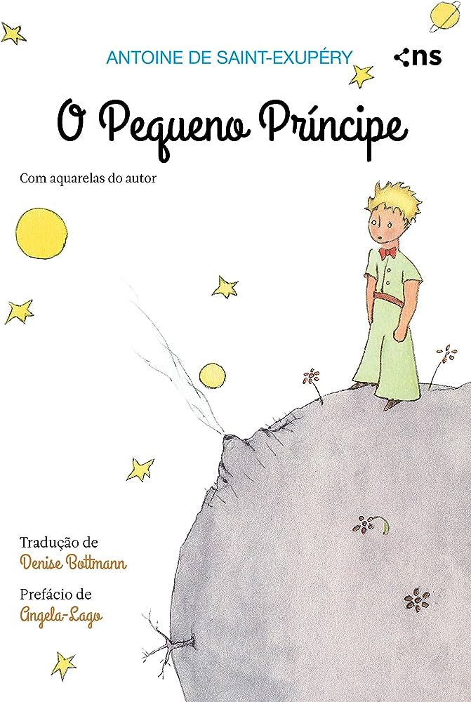

O Pequeno Principe
Descrição:
Conheça a edição mais consagrada de um dos maiores clássicos da literatura, publicada no Brasil desde 1952, com a tradução do poeta dom Marcos Barbosa e as ilustrações originais em aquarela do autor.
Nesta história que marcou gerações de leitores em todo o mundo, um piloto cai com seu avião no deserto do Saara e encontra um pequeno príncipe, que o leva a uma aventura filosófica e poética através de planetas que encerram a solidão humana.
Um livro para todos os públicos, O pequeno príncipe é uma obra atemporal, com metáforas pertinentes e aprendizados sobre afeto, sonhos, esperança e tudo aquilo que é invisível aos olhos